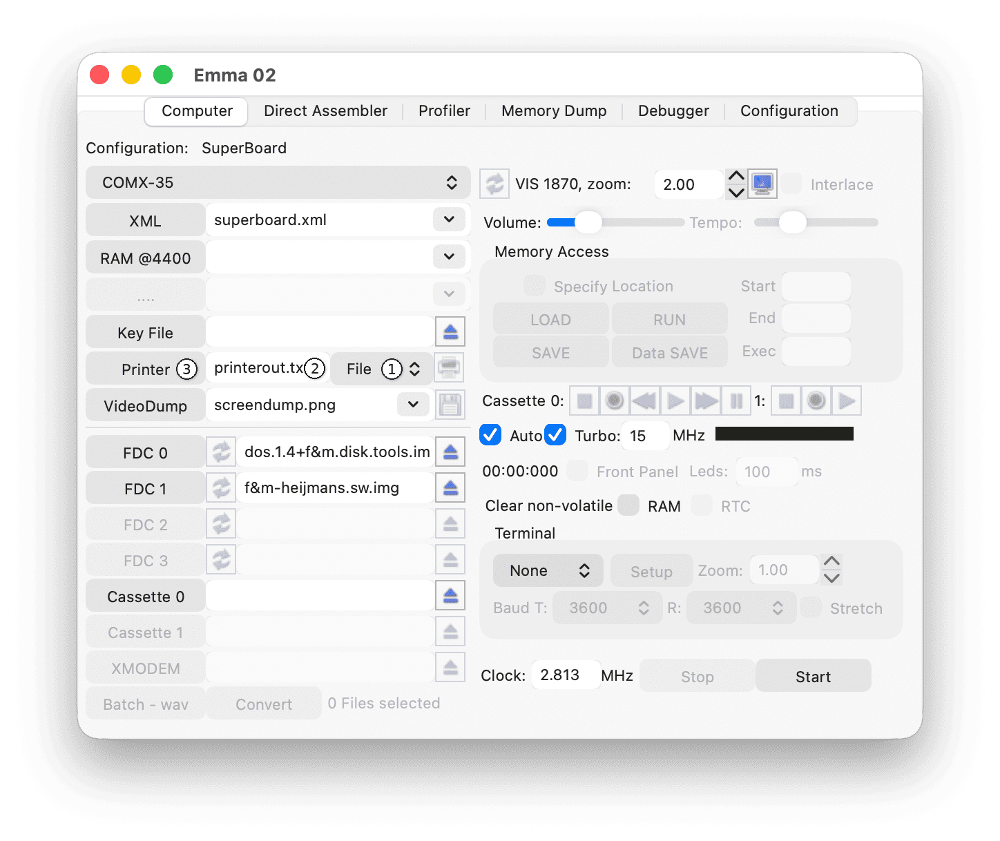
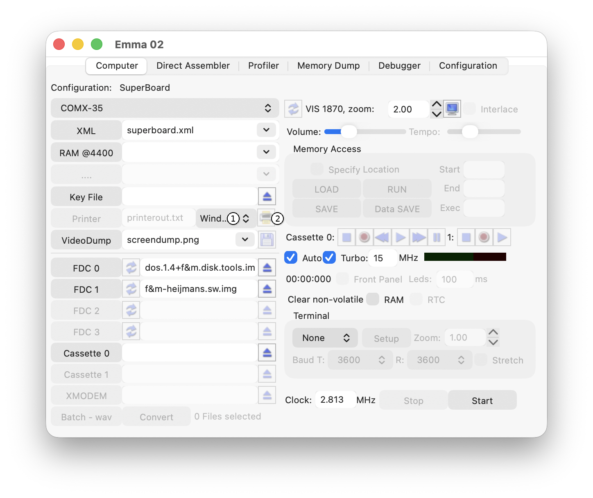
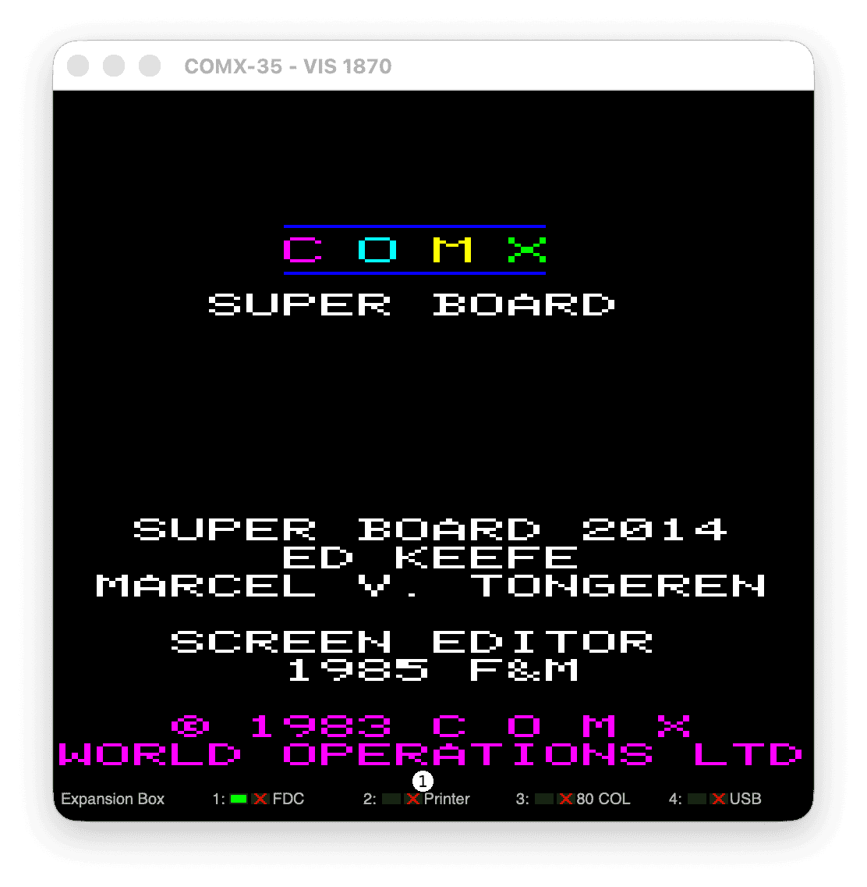

Printer support is available when the selected XML file includes a printer definition.

To print to a file, select File using the Mode selector (1). If the indicated print file (2) already exists, a new file will be created (with a sequence number) every time the emulated computer is started.
Example: if the print file is printerout.txt, this file is used the first time; the next time, the file printerout.1.txt will be created.
To specify a different print file, use the Printer button (3) to browse for the file, or type a new file name in the text field (2).

To print to an output window and optionally to a real printer, select Window using the Mode selector (1).
To print to a COMX PL-80 Plotter window and optionally to a real printer, select Plotter using the Mode selector (1).
Note: To start a new printout, close and reopen the printer output window.
To open a printer window manually, press the F4 key or the Printer button (2).
From the printer output window, use the Print button (1) to send the printout to a real printer, use Preview (2) or Setup (3).
The number of characters per line can be changed (40, 80, 96 or 120) with the first Font choice button (4).
The printer font can be changed with the second Font choice button (5). By default, the teletype font is used, which has a fixed width per line (like a matrix printer); all other fonts have a variable character width.
From the plotter output window, use the Print button (1) to send the printout to a real printer, use Preview (2) or Setup (3).
The plotter system ROM file can be changed via the ROM control (4) and the character ROM file via the CHAR control (5).
The installation includes a plotter system ROM file (pl80.bin) with the original character font set, as well as additional font ROMs: Italic, Emphasized and Outline (pl80.it.em.ou.bin) and Tiny (pl80.tiny.bin). The first font ROM also includes two sets designed for use with MSX computers.
To access the fonts, use code 12 and character set:
0. Original PL-80 Pica font (character 32 to 255)
With the italic font ROM selected:
1. Italic font 2. Emphasized font 3. Outline font 4. MSX font (character 1 to 31, by adding 32) 5. MSX font (character 32 to 255)
With the tiny font ROM selected:
1. Tiny font
An example is included to print the different character sets; see the file Fonts.comx in the Comx/Plotter directory.
For additional PL-80 commands, see the PL-80 directory on the Dutch COMX Club.
To disable the COMX status LEDs, click one of the LEDs; a red cross shows the LEDs are disabled (1) as shown in the screenshot below. Disabling the LEDs speeds up printout, especially at higher CPU speeds.

To run the COMX emulator with the Parallel printer card (as well as COMX PL-80 Plotter simulation) select one of these XML files:
To run the COMX emulator with the Serial printer card select XML file fdc-serial-32k-eprom.xml.
To run the COMX emulator with the Thermal printer card select XML file fdc-thermal-32k-joy.xml.